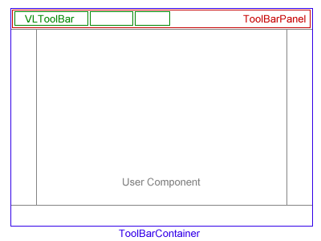

The VLToolBars.
This packages contains an independant set of components allowing multiple draggable toolbars
to be positionned around a central component.
Getting Started
Getting started is easy :
- create a ToolBarContainer (a specialized JPanel with a BorderLayout) using the
static factory method ToolBarContainer.createDefaultContainer(...) specifying the
borders that will contain your toolbars.
- add you component at the center : container.add(myComp, BorderLayout.CENTER)
- get a reference to a ToolBarPanel from the ToolBarContainer : container.getToolBarPanelAt(BorderLayout.NORTH)
- add one or more VLToolBars to it, using the ToolBarConstraints to specify their relative order.
- enjoy the results !

An overview of the components used.